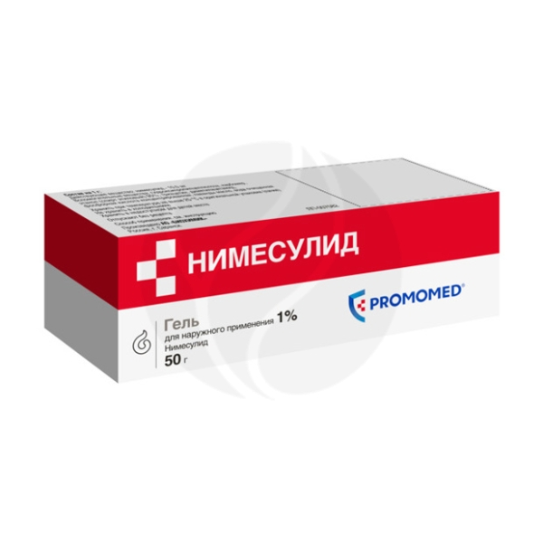
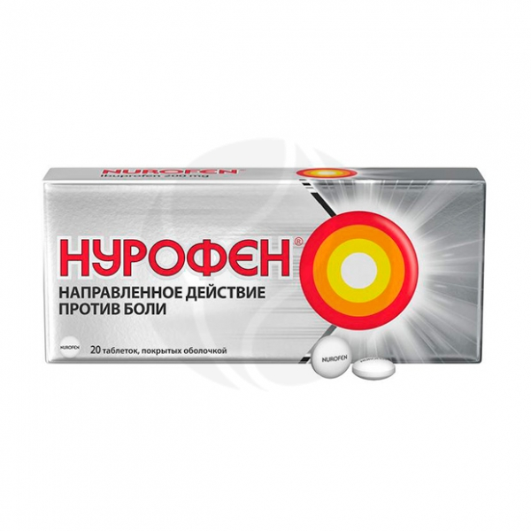

Название
Состав
Цена
Внешний вид
Нимесулид гель д/наружн. прим. 1%, 50г
На 10 г:
Активное вещество: нимесулид - 10,00 г;
Вспомогательные вещества: гидроксипропилцеллюлоза - 16,8мг, карбомер - 6,0, этанол (спирт этиловый) 95% - 665,7мг, триацетин - 70,5мг, диметилацетамид - 148,0 мг, фосфорная кислота концентрированная - 2,5 мг, лаванды масло - 1,5 мг, вода очищенная - до 1,0мг
111

Нурофен таблетки п/о 200мг, №20
Таблетки, покрытые оболочкой белого или почти белого цвета, круглые, двояковыпуклые, с надпечаткой черного цвета "Nurofen" на одной стороне; на поперечном разрезе таблетки ядро белого или почти белого цвета, оболочка белого или почти белого цвета.
1 таб.
ибупрофен 200 мг
Вспомогательные вещества: кроскармеллоза натрия - 30 мг, натрия лаурилсульфат - 0.5 мг, натрия цитрата дигидрат - 43.5 мг, стеариновая кислота - 2 мг, кремния диоксид коллоидный - 1 мг.
669
